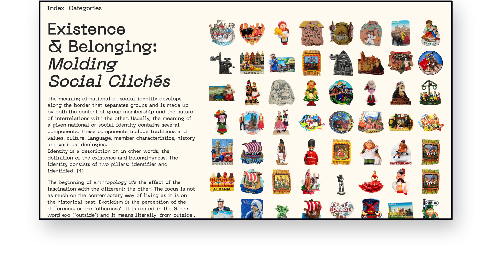

Hello World ¦⁆
My name is Radina Yotova. I am an interactive designer based between Bulgaria & The Netherlands. I hold a BA in Graphic Design from Royal Academy of Art, The Hague.
I am mainly interested in image-making and storytelling, produced and designed by means of new media technology.
Some of the topics I am passionate about are social behavior, participatory culture, network culture and computer vision.
Now You See Me: Re-appropriating the Visual Landscape of Our Digital World is an interactive-video installation reflecting upon the layer of absurdity that occurs within the effort to mimic human perception with algorithms.

Long Story Short addresses the notion of non-traditional storytelling and more specifically how it is being reshaped by social media platforms and mass communication.
Landing page for the work of 32 graduates in the Graphic Design department at Royal Academy of Art, The Hague.
A Better Connection is a weather-driven artwork, creatively engaging technology with meteorological data in order to activate climate awareness. It addresses the importance of understanding how long-term weather patterns are changing and it is trying to encourage transformation in our daily life attitude.
Identity 2.0 investigates the methods by which social media platforms are using facial recognition systems to identify human faces in digital images, and the extend of accuracy to which those algorithms are capable of performing.
In the past time was visualised in a circular form, as a closed cycle, happening over and over again. The passage of time was observed mostly in nature and the passage of the seasons.
With the development of the transport and the modernisation of the world, life became faster, respectively people began to need more precise ways to keep track of the time. Time became an infinite horizontal with no beginning, and no end.
Loop 21 is an alternative way to keeping track of time. With this project I want to bring back the audience to the natural flow of time passage.

Due to the increased accessibility to the internet a new form of work has evolved.
In many cases people are used for extending certain computational systems.
Physical Outsourcing was streamed, and was completed through the collection of physical micro tasks from multiple contributors.
The tasks involved translation, illustration and performance in relation to a given text. A web drawing tool was proposed for audience interaction, while watching the live stream.
The Collective Diary is a project made in relation to the corona crisis in March 2020. It is about finding new ways of communication through all those applications that we've instantly got used to. The perfomative video explores the extend to which you can creatively expressing yourself virtually.
Existence & Belonging: Molding Social Clichés is a project focused on the relation between national identity and exoticism in our globalised society. The concept of the exotic became fundamental in the 19th century when modern tourism started to exist as we know it today. Exoticism is considered to be the representation of one culture for consumption by another. In many ways modern tourism has always been organised around the stereotypical understandings of the “other”. Crossing beyond political or cultural borders provokes the tourist to recreate variety of stories for the “other”, interpret in many different ways.
Switch 2020 is a visual identity system, designed for the annual charity event "Switch". A commissioned project by the Nederlands Dans Theater. The topic of this years event was waste in the ocean and it was sponsored by "Plastic Soup Organisation".
LOL is a research-based publication inspired by the notion of our contemporary online culture. From scientific studies of the 'meme as a cultural unit' to internet memes used as means of communication, the booklet shortly covers different aspects of the meme and its development throughout last century.

Dream Team is a visual study of the relation between human emotions and body language. Thorugh the usage of stock photography, the project explores the stereotypes created around various behaviours, and how they are represented by the mass of commercial imagery.

-
Group Exhibitions:
Youngbloods Exhibition / Museum of the Future / Enschede / 2022
GOGBOT Festival / Stationsplein Enschede / Enschede / 2022
Graduation Show / Royal Academy of Art / The Hague / 2022
You Shall Be Spam / Maakhaven / The Hague / 2021
The Colour Show / Royal Academy of Art / online / 2020
Page Found / Royal Academy of Art / online / 2020
I Need 4 walls / Royal Academy of Art / Stroom / The Hague / 2020
Quarter Past Ten / Royal Academy of Art / Rotterdam / 2018
All rights reserved